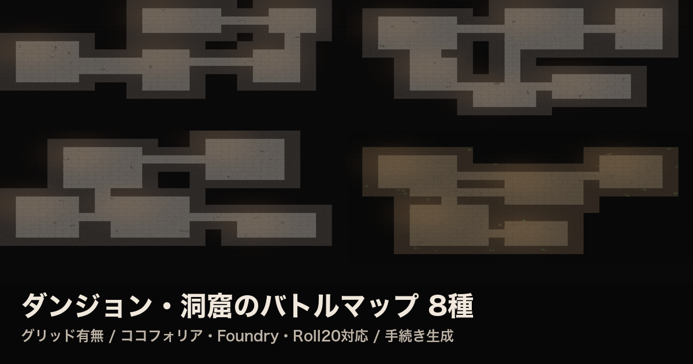
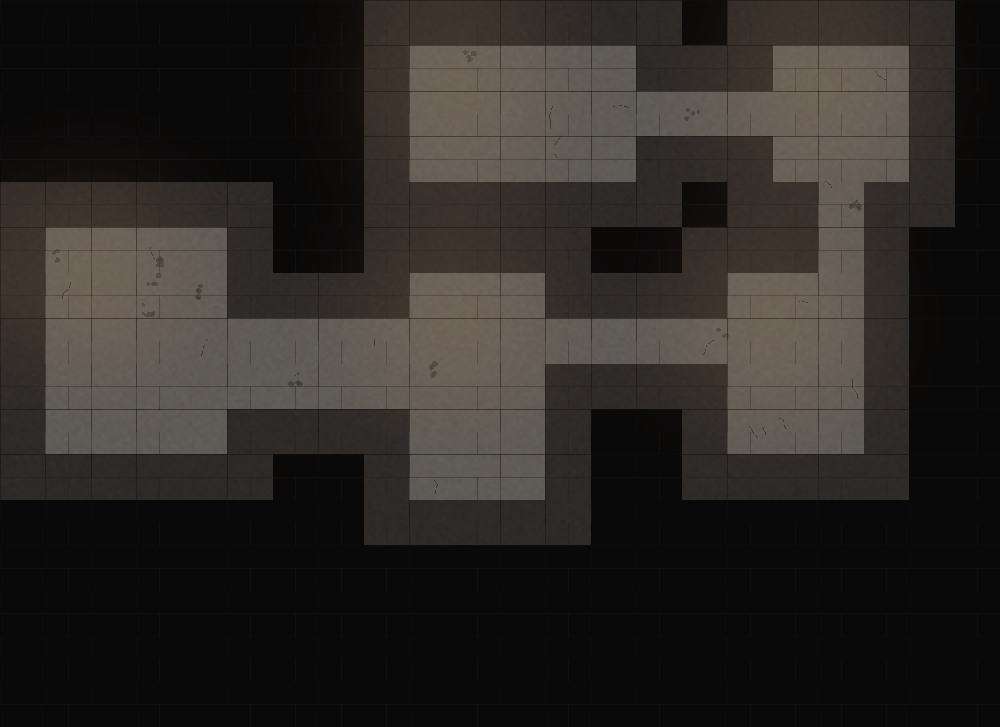
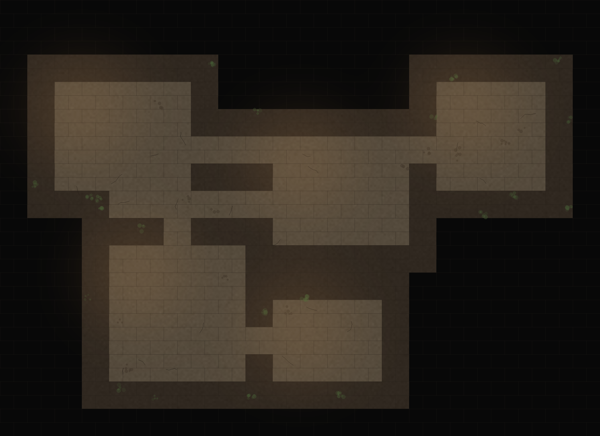

TRPGセッション用のバトルマップって、毎回用意するのが地味に大変です。買ってきた1枚を使い回すと既視感が出るし、かといって毎回描くのは現実的じゃない。
それなら「部屋の配置から石材のテクスチャまで、プログラムに計算させて無限に作ればいいのでは」と思って、実際に手続き生成のアルゴリズムを書いてみました。拡散モデルなどの生成AIは一切使っていません。numpyとPILだけで、ピクセル単位まですべて計算で描いています。
やっていることはシンプルです。
これだけで、毎回まったく違うレイアウトのダンジョンが手に入ります。コードにするとこんな感じです（実際のロジックを簡略化したもの）。
for i in range(1, len(rooms)):
a, b = rooms[i - 1], rooms[i]
# 部屋Aの中心からY方向、部屋Bの中心からX方向にL字で通路を掘る
grid[a.cy, min(a.cx,b.cx):max(a.cx,b.cx)+1] = True
grid[min(a.cy,b.cy):max(a.cy,b.cy)+1, b.cx] = True単色のグレーだと平坦でゲームっぽくないので、質感を足します。ポイントは、いきなり高解像度のノイズを乗せないこと。粗いノイズ（数十ピクセル単位）を作ってから画像全体に引き伸ばすと、自然な"石のムラ"になります。逆に細かいノイズをそのまま使うと、ザラザラしすぎて安っぽく見えます。

グリッド有り版。1マス70px＝Roll20/Foundry VTTの標準グリッドに合わせています。
ひび割れ・瓦礫・苔・松明の灯りは、床や壁のマス座標をそのまま使って配置しています。壁際にだけ苔を生やす、部屋の中心付近にだけ松明の暖色グローを乗せる、というように「その場所らしい」ルールに沿って散らすと、ランダムでも破綻して見えません。

洞窟テーマ（グリッド無し版）。テーマごとにパレットとモチーフだけ差し替えています。
手描きや画像生成AIだと「1枚ずつ品質が変わる」「同じような構図になりがち」という問題が起きます。計算式で描く方式だと、パラメータ（部屋数・テーマ・シード値）を変えるだけで、同じ品質のまま何百パターンでも作れます。これは正直、この方式でしか出せない強みだと思っています。
同じ舞台で遊べるクトゥルフ神話TRPGのオリジナルシナリオも作りました。納骨堂を舞台にしたホラー一本ものです。